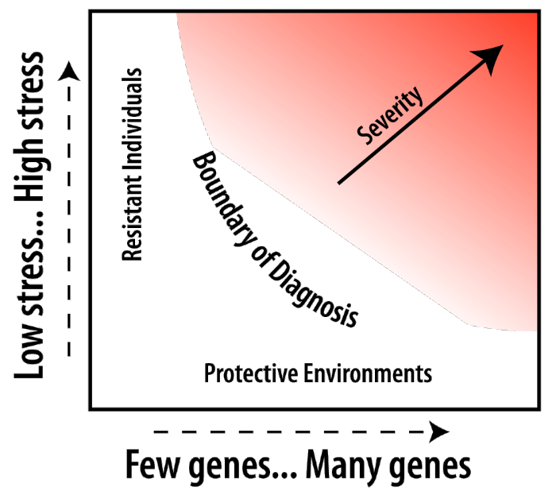

Notes 19 depression
19.1 What is Depression?
19.1.1 Diagnostic Criteria of Major Depressive Episode
19.1.1.1 At least one of the following three abnormal moods significantly interfered with the person’s life:
Abnormal depressed mood most of the day, nearly every day, for at least two weeks (dysphoria)
Abnormal loss of all interest and pleasure most of the day, nearly every day, for at least two weeks (anhedonia)
If 18 or younger, abnormal irritable mood most of the day, nearly every day, for at least two weeks
19.1.1.2 At least five of the following symptoms have been present during the same two week depressed period
- Depressed mood (criterion A, above)
- Loss of all interest and pleasure (criterion B, above)
- Appetite or weight disturbance
- Sleep disturbance
- Agitation or slowing
- Fatigue or loss of energy
- Abnormal inappropriate guilt
- Poor concentration
- Thoughts of death or suicide
19.1.2 source
- Inheritance
- Stress/Loss
19.2 Prevalence and Incidence of Major Depressive Episode
19.2.1 Prevalence: the proportion in the population with the illness, e.g., a percentage (burden)
- Define and count the population denominator
- Count cases for the numerator from that defined population
19.2.2 Incidence: the rate at which new cases form in the population, e.g.rate per time (force of morbidity)
- Define the population
- Define the cohort (risk set) who have never had the disorder
- Define the time period for follow-up
- Count the number of person years for the denominator
- Count the number of new cases for the numerator
19.2.3 variety
- gender: female early
- age: after 50
- lifetime: raise then decrease
- culture: east low, west high
19.3 The Natural History of Major Depressive Disorder
- Prodrome is the period after the disease has begun, before it is diagnosed
- Dysphoria and suicide have a long prodrome
- Onset is the beginning of the first episode
- Episodes last several months
- Remission is the end of the symptoms in an episode
- Recovery occurs when a year has passed without another episode
- Recurrence is the start of a later episode after recovery
- About 50% of all lifetime cases have only one episode
- About 15% of all lifetime cases are unremitting
- About 35% of all lifetime cases have a relapsing and remitting course
- Gender Is Associated With Prevalence of Major Depressive Disorder, But Not With Bipolar Disorder
- Gender Affects Incidence But Not Recurrence and Duration
19.4 Major Depressive Disorder and Medical Conditions
- Predictors of Non-Insulin Dependent Diabetes Onset
- Find connection between Depression and certain illness
19.5 Estimating the Burden of Major Depressive Disorder and Medical Conditions
- Estimating the Burden of Disease–Disability Weights
- Disability weight of 0.0 = healthy person
- Disability weight of 1.0 = death
- Disability weight of 0.5 = disability weight indicating the prevention program would have to extend life for two years
- Depression for estimation of disability weight: about 0.35 and top3 around the world
19.6 Does depression look the same across the world?
- Majority of research on mental health has been done in so called ‘high-income countries’
- Our methods/knowledge of mental health originate from research with a minority ‘Western’ (industrialized) population -Category fallacy (Kleinman, 1987): Applying a category that makes sense for a particular cultural group in another group, for whom this category may not make sense
- Etic:
- Disease perspective
- International classification
- Start with ‘Western’ evidence based treatments
- Emic:
- Illness perspective
- Local terminology and ethnopsychology
- Build on locally available treatments for mental health
19.7 Is depression a relevant issue in low- and middle-income countries?
- Despite continued tension between emic and etic approaches, research shows high burden of depression also in low- and middle- income countries.
19.8 What predicts depression in low- and middle-income countries?
- Poverty
Out of 115 studies of poverty and common mental disorder: 79% positive association; 15% no association; 6% negative association
More consistent relation with: education, food security, housing,social class, socioeconomic status, financial stress- Violence
- In conflict-affected populations, studies show weighted prevalence of depression: 17.3% (26 studies using random samples and diagnostic interviews)
Predictors: potentially traumatic events (OR 1.64); torture (OR 1.48); residency status in asylum seekers (OR 1.30); time since conflict (OR 0.80)
19.9 Basic Concepts of Epidemiology as Applied to Depression
- Definitions of Epidemiology
- The study of diseases in populations
- The study of rates (Langmuir) Prevalence (burden and demand) Incidence (force of morbidity)
- The study of disease occurrence by time, place, and person (Lilienfeld and Stolley)
- Seven Uses of Epidemiology (Morris)
- The study the history of health of populations, facilitating projections in to the future
- To diagnose the health of the community, which facilitates prioritizing health problems
- To study the working of health services, with a view towards their improvement
- To estimate individual risks, and how to avoid them, which can be communicated to individuals
- To identify syndromes
- To complete the clinical picture of chronic disease, especially as regards natural history
- To search for causes of health and disease
- Time, Space, and Disease: The Ecological Approach
- Cohort Studies
- Strengths No recall bias Estimates incidence Estimates Relative Risk
- Weaknesses Expensive Many controls Long time Attrition bias
- Case Control Studies
- Strengths Requires no hypothesis Cases can come from clinics Small number of controls
- Weaknesses Biased recall (strength) Temporality Controls may not match cases (consistency)
19.10 Epidemiology of Depression: Risk Factors
- Inheritance
- Evidence on Inheritance of Depressive Disorder Selected Family Studies - yes
- Evidence on Inheritance of Depressive Disorder Selected Twin Studies - yes
- Evidence on Genome-?wide meta?‐analysis -No!(Manhattan plot)
- Stress and Diathesis
- Diathesis Stress Model
knitr::include_graphics('images/DSM.png')
- Social Supports
- Stress increases risk for depressive disorder
- Social supports are protective from depressive disorder
- Stress and social supports interact in affecting risk
- Inherited traits interact with stress in raising risk
- Low social support is riskier for females
- Work, Family, and Life Stage(forest plot)
- Work Environment affects risk for depression
- Life stage affects risk for Depression among Women in London
- Parenting Stress affects Maternal Mental Health
- Recency of Birth: Are we entering an “age of melancholy?”
- Cohorts born later have higher risk People with depression die sooner Older cohorts are less introspective More treatment availability leads to better recall Older subjects forget more distant episodes
- We are not entering an “age of melancholy”
- Appearance of large trends for higher prevalence in later cohorts is probably at least partly an artifact of recall
- Evidence on trends in rise in incidence is limited, but suggests there has not been a rise in incidence in the past half century
- There is evidence for a rise in prevalence for women in cohorts born about 1935-1954
- Women born 1935-1954 entered work and married life in 1955-1974
- These cohorts of females may have greater chronicity of depression than earlier or later cohorts
- Trends in social supports and divorce may be connected to trends in chronicity of depression for women
19.11 BARRIERS AND SOLUTIONS
- Large proportions of individuals with major depression do not seek mental health treatment.
- There variations in treatment seeking according to social and demographic factors such as age, sex and racial/ethnic group.
- Barriers include lack of perceived need, negative attitudes towards treatments, stigma and structural barriers.
- Legislative initiatives and antistigma campaigns attempt to reduce these barriers.
19.12 HISTORICAL DEVELOPMENTS & RECENT TRENDS
- Possible reasons for recent trends in treatment of major depression
- Increased popularity of antidepressant medications among providers and the general population.
- Fewer side effects of newer antidepressants (practice innovation).
- Increased treatment of major depression in general medical settings.
- Aggressive marketing practices by pharmaceutical companies.
- Greater recognition of “major depression” as an illness.
19.13 QUALITY OF DIAGNOSIS & TREATMENT & INITIATIVES FOR IMPROVEMENT
- Diagnosis of depression, at least in the US has increased over the past 2-3 decades.
- Much of the care for depression in community settings is done by primary care and other general medical providers.
- Many patients with depression, however, are not detected and many individuals who are given the diagnosis do not meet the criteria (false negative and false positive problem).
- The quality of depression care in the community falls short of standards.
- Prevention of depression is possible through selective and indicated preventive interventions.